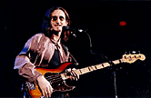
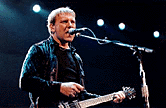

Gund Arena: November 4
by Pete Roche
photos by Mark Mindlin
 Canada's elite power trio arrived in town Monday night to deliver over two-and-a-half hours of seminal prog-rock that documented its entire 25-year career. Billed as "An Entire Evening With Rush," the concert was a spirited performance on the part of bandmates Geddy Lee (bass and vocals), Alex Lifeson (guitars) and drummer extraordinaire Neil Peart.
Global touring is hardly new to these arena veterans (they're currently touring behind their 16th studio album), but what distinguished this visit from past shows was the lack of an opening band. Never before has the trio been able to play 25-song sets -- the time constraints of sharing a bill with an opening act simply wouldn't permit it. But Rush were unhampered on this night at the Gund, and ticket-buying fans rejoiced the fact.
Surprisingly, Lee and company didn't start off with new material, but "Dreamline" saw the band bolting out of the starting gate anyway. Lifeson's serrated guitar sound fueled the twists and turns of "Driven," giving the crowd its first luscious taste of the new TEST FOR ECHO.
The automotive theme continued. The band revisited the classic "Red Barchetta" while a live camera feed splayed its images on a huge video screen behind Peart's rotating acoustic kit. The black-clad Lifeson drew quick laughs by mugging with cardboard cut-outs of Marilyn Monroe and the Three Stooges while picking arpeggios and fierce solos. "Animate" and "Nobody's Hero" were choice selections from the 1993 album COUNTERPARTS.
 The progressive rock purists didn't reach Xanadu until the threesome rendered the epic "2112" in its entirety. Gradually the 1975 space opera unfolded, telling the tale of a future-world hero who discovers a guitar and learns the forbidden art of music. The band was understandably breathless after winding down with the defiant "Temples Of Syrinx" coda, but a 20-minute intermission allowed overjoyed fans to make potty stops and beer runs.
The stage was slightly modified for the band's second set. Satellite dishes were unveiled on each side of the stage, and tundra-esque snowscapes were projected onscreen. When Rush returned and lunged into "Test For Echo," the dishes pivoted to the churning rhythm and emitted green laser beams that pierced the darkness. The art of skillful lighting is usually lost on such big rock events, but the pod configurations and color schemes for this show were phenomenal -- surely amongst the best to ever illuminate the Gund.
"Subdivisions" was the only cut from SIGNALS, and featured Lee on both bass and keyboards. Nobody really cared that the set consisted primarily of guitar-based rock and roll. FM radio staple "Freewill" only underscored that point, and Lifeson and Lee's guitar-bass jam in the middle of the song raised the intensity level considerably. These older songs typically sounded better than more recent, unproven Rush cuts, and the crowd reaction to them was markedly louder.
After some instrumental foreplay with the funky "Leave That Thing Alone," Lifeson and Lee abdicated the stage to the percussion prowess of Peart. The band's lyricist approached his solo as a musical composition unto itself, flailing away on his snare and hammering out melodies on electronic xylophone pads. With his mathematical rhythms and meticulous stick work, Peart demonstrated again that while drum solos in general do suck, his is one you don't want to miss.
More techno-rock mayhem from the '80s ensued with "Natural Science" and the bass-guided "Force 10." The only predictable move Rush made all night was to wrap things up with the ageless hit "Spirit Of Radio" and the perennial favorite "Tom Sawyer."
Encore instrumental "YYZ" reminded all in attendance of why they became Rush devotees in the first place -- the individual members are brilliant, tight-playing musicians whose arrangements are always clever and exciting. The night's only drawbacks were the sparse (but obvious) keyboard sequences piped into the mix for certain tunes, like the horns on "Roll The Bones." You'd think a band of Rush's caliber wouldn't have to rely on cheap tricks.
{kind=link}
{kind=link}